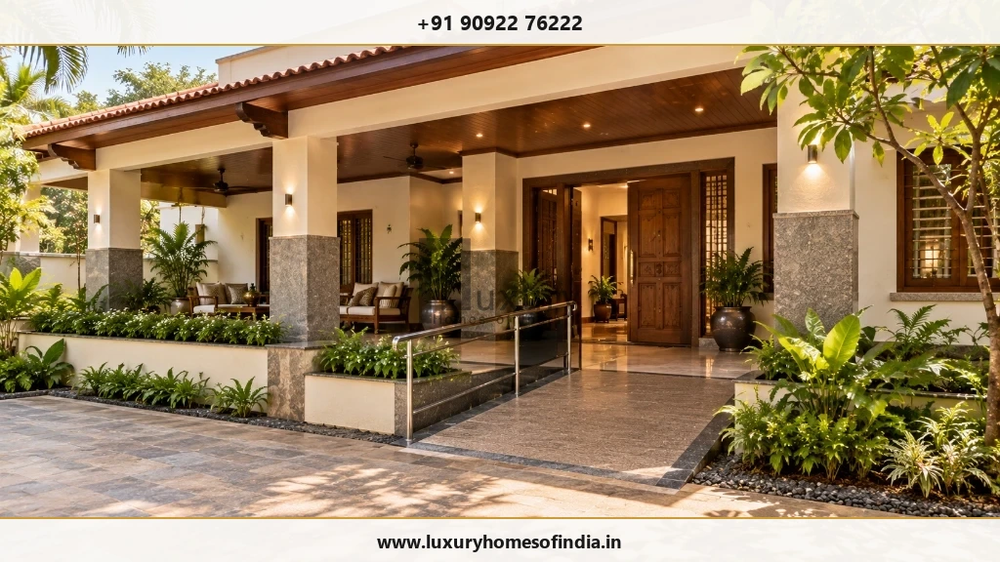
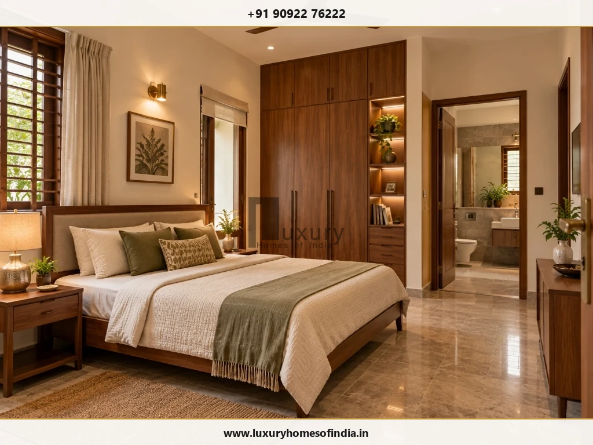
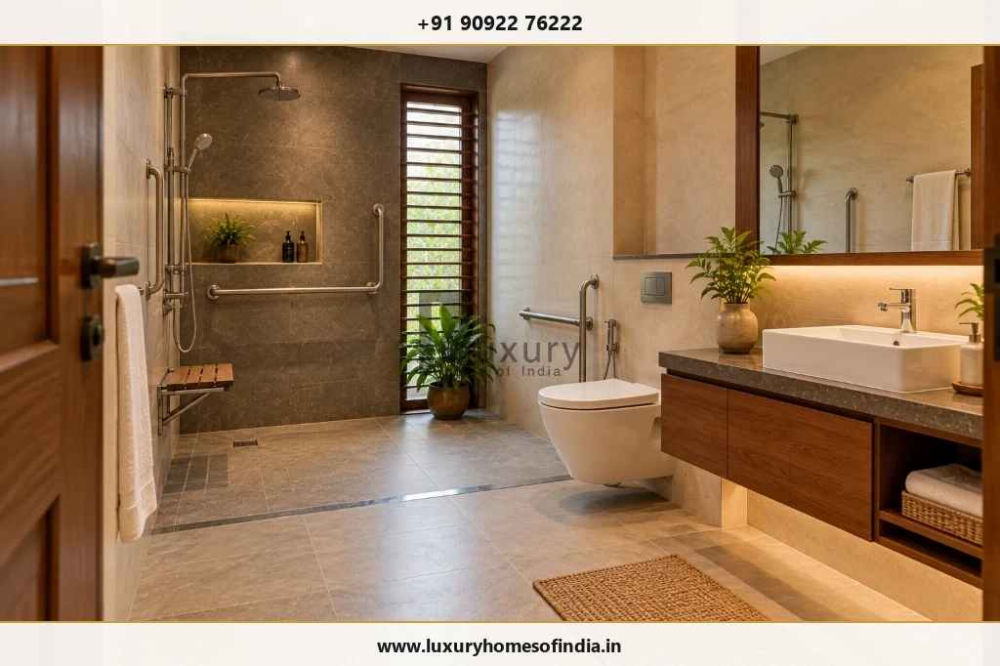
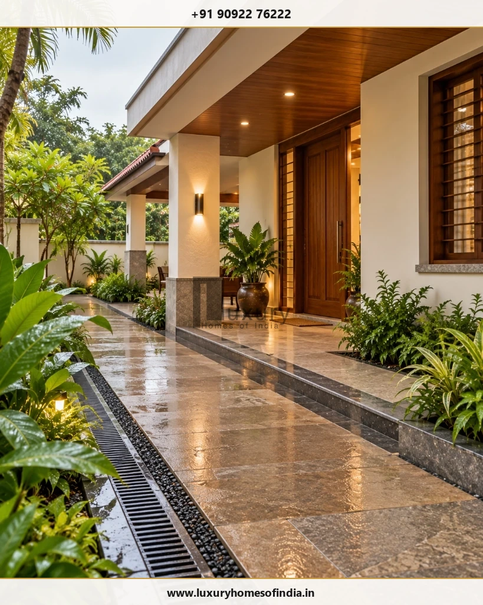
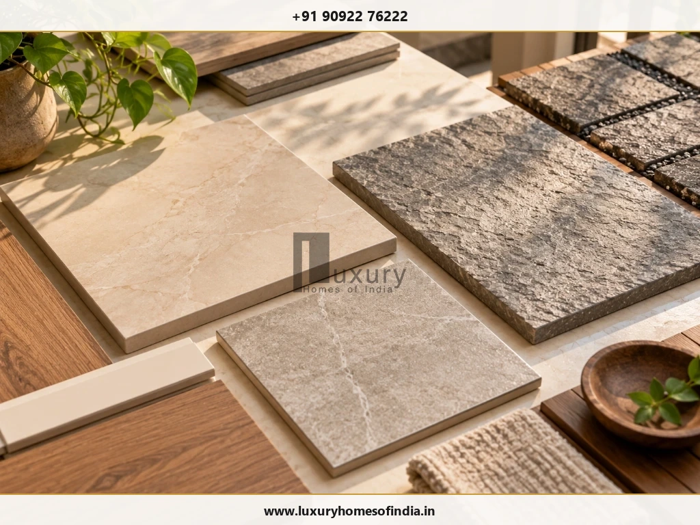

Executive Summary: Accessible Home Design
Senior-friendly home design makes everyday living more comfortable and accessible as people's needs change with age. It combines thoughtful room planning, safer movement, appropriate lighting, suitable flooring and bathrooms designed around the resident's mobility and daily routine.
For families building a home in Chennai, important decisions include providing a convenient entrance route, considering a ground-floor bedroom and bathroom, reducing unnecessary level changes, managing rainwater and planning for future mobility requirements. A well-designed home can integrate these features into contemporary architecture without sacrificing privacy, visual appeal or comfort.

1. What Makes a Home Senior-Friendly?
A senior-friendly home supports comfortable movement, dignity, and everyday independence while gracefully accommodating natural changes in physical mobility, balance, vision, and stamina.
The objective is not simply to attach institutional support bars or aftermarket medical gadgets. Rather, it is to orchestrate a coherent, beautiful residential environment where entrances, ground-floor living suites, ensuite bathrooms, kitchens, and outdoor garden walkways interact seamlessly.
Core Design Priorities:
- Step-free arrival sequence: A gentle ramp or flush transition from the car porch to the main entrance threshold.
- Complete ground-floor living suite: A spacious bedroom and barrier-free ensuite bathroom on the ground level to eliminate daily stair climbing.
- Wide, unobstructed circulation paths: Clear hallway widths of at least 1,000 mm to 1,200 mm to accommodate walking frames or wheelchairs.
- Specialized non-slip flooring: Surfaces selected for wet and dry conditions with certified slip resistance (R10 to R11 ratings).
- Ergonomic lighting and controls: Glare-free illumination, rocker light switches placed at 900–1000 mm, and automatic nighttime skirting lights.
- Accessible everyday storage: Wardrobes, pantries, and vanity cabinets designed within comfortable 450 mm to 1,200 mm reach zones.
- Emergency alert systems: Discretely integrated bedside and bathroom panic pull-cords linked to family mobile devices.
- Future vertical expansion provisions: Structural space and electrical capacity reserved for a residential passenger elevator.
2. Plan the Ground-Floor Bedroom and Bathroom Together
In multi-storey residences (such as G+1 or G+2 villas in Chennai), placing the primary senior bedroom on the ground floor is the single most effective design choice. It preserves daily independence and eliminates fatigue and fall risks associated with stairs.

Key Bedroom Planning Standards:
- Clearance Around the Bed: Maintain a minimum of 900 mm (preferably 1,200 mm) of clear walking space on both sides of the bed and at the foot.
- Ergonomic Bed Height: Set the mattress top at 450 mm to 500 mm above the finished floor, allowing feet to rest flat on the floor when sitting on the edge.
- Eliminate Loose Rugs: Loose carpets and unsecured doormats are the leading cause of domestic trips and falls; use continuous fixed flooring throughout.
- Bedside Controls: Install two-way lighting switches, air conditioning remote docks, and phone chargers within effortless arm's reach of the headboard.
3. Design a Safer, More Accessible Bathroom
Bathrooms are the most critical zone in senior-friendly architecture. Hard surfaces, wet conditions, tight turning quarters, and awkward fixture heights can make bathing hazardous unless engineered with precision.

Flush Roll-In Shower
Eliminate traditional 4-inch raised curbs or sunken step-downs. Use a flush transition with a continuous linear stainless steel trench drain along the back wall to contain water without creating a trip hazard.
Engineered Grab Bars
Install heavy-duty 32 mm diameter stainless steel grab rails beside the water closet and inside the shower. Walls must have solid masonry backing or 18 mm marine-plywood structural reinforcement behind tiles to support 150+ kg pull loads.
- Comfort-Height Water Closet: Specify a wall-hung WC mounted at 450 mm to 480 mm rim height (compared to standard 400 mm), making sitting down and standing up far easier on knees and hips.
- Single-Lever Thermostatic Mixers: Replace twisting knobs with single-lever mixer taps that feature anti-scald temperature limiters to prevent hot water burns.
- Outward-Swinging or Sliding Doors: If an occupant falls inside the bathroom, an inward-swinging door can be trapped against their body. Specify doors that swing outward or slide smoothly on top-hung tracks.
4. Make Entrances and Circulation Routes Easier to Navigate
The transition from the street and car porch into the house sets the tone for accessibility. In Chennai, homes typically have a raised plinth (2 to 3 feet above road level) to protect against street monsoon flooding. Managing this level change safely is essential.

Ramp and Pathway Engineering Standards:
- Maximum Ramp Slope: Design ramps with a gentle 1:12 gradient (for every 1 inch of rise, provide 12 inches of run); steeper ramps cause fatigue and tipping risks.
- Intermediate Landings: Provide a level 1,500 mm × 1,500 mm resting landing for every 9 metres of ramp run and at all directional turns.
- Dual-Height Handrails: Install continuous handrails on both sides at 750 mm and 900 mm heights, extending 300 mm past the ramp ends.
- Wide Clear Doorways: Main entrance doors should offer a clear opening of at least 1,000 mm; interior doors should provide at least 900 mm clear width.
5. Improve Lighting, Visibility and Wayfinding
Aging eyes experience reduced light transmission, slower dark adaptation, and heightened sensitivity to glare. A thoughtfully engineered lighting strategy transforms safety and comfort:
- Daylight without Glare: Introduce abundant natural light through north-facing clerestory windows, internal courtyards, or sheer curtains that diffuse harsh afternoon solar glare.
- Automatic Nighttime Path Lighting: Install recessed low-level LED skirting lights (3000K warm white) along the hallway between the bedroom and bathroom, triggered by motion sensors.
- High Illuminance in Task Areas: Ensure minimum 300 lux in kitchens, reading corners, and vanity mirrors to assist detailed visual tasks.
- Visual Contrast: Use subtle colour contrasts between floor finishes and walls, door frames and architraves, and stair tread edges to enhance depth perception.
6. Select Suitable Flooring and Finishes
Flooring materials must strike an optimal balance between stability, slip resistance, and ease of cleaning:

| Area | Flooring Recommendations & Technical Checks |
|---|---|
| Entrance & Porch | Flamed or bush-hammered granite, cobbles, or R11-rated exterior pavers. Must retain grip when wet from monsoon rain. |
| Living & Dining | Honed (matte) natural stone, satin vitrified tiles, or engineered hardwood. Avoid high-gloss mirror-polished marble which creates glare and slip risks. |
| Senior Bedroom | Warm timber flooring, bamboo, or matte porcelain tiles. Remove all loose scatter rugs and ensure flush transitions into wardrobes. |
| Ensuite Bathroom | Matte-finish porcelain tiles with certified slip resistance (R10 in dry zone, R11 in shower zone). Avoid large polished slabs. |
| Kitchen | Anti-skid vitrified tiles that resist grease, oil, and moisture while remaining easy to wipe down. |
| Staircases | Full-body granite or solid hardwood with integrated routed anti-slip grooves or contrasting non-skid carborundum strips along the nosing. |
7. Plan Stairs and Future Vertical Access
Even when a ground-floor suite is the primary living zone, upper floors must be accessible for family gatherings, terrace gardens, or visiting grandchildren:
Staircase & Elevator Planning Guidelines:
- Gentle Stair Geometry: Limit risers to 150 mm (6 inches) and ensure treads are at least 300 mm (12 inches) wide with no open risers or tripping nosing projections.
- Continuous Handrails: Provide robust handrails on both sides of the staircase, ergonomically rounded (40–45 mm diameter).
- Future Lift Shaft Provision: Allocate a structural shaft (minimum 1,500 mm × 1,500 mm clear) during structural casting. It can serve as a closet or open study initially and convert easily to a residential hydraulic or gearless traction elevator later.
8. Make the Kitchen Easier to Use
Meal preparation should be ergonomic and fatigue-free:
- Full-Extension Pull-Out Drawers: Replace deep lower base cabinets with full-extension tandem drawers so pots and pans can be viewed from above without painful kneeling.
- Mid-Height Appliance Integration: Position microwave ovens, built-in ovens, and dishwashers at counter height (between 750 mm and 1,000 mm) to eliminate heavy lifting.
- Safety-First Induction Cooking: Install touch-control induction hobs featuring auto shut-off and pan-detection sensors, reducing burn and open-flame risks.
- Knee-Clearance Prep Stations: Provide an open knee-clearance recess beneath one section of the countertop (750 mm high) allowing food preparation while seated.
9. Integrate Smart-Home and Emergency Features
Modern home automation provides invaluable peace of mind when designed around simplicity and reliability:
- Wireless Panic Buttons: Place waterproof emergency call buttons inside the shower and beside the bed, programmed to send instant SMS alerts and ring interior chimes.
- Smart Video Doorbell & Digital Locks: Enable residents to view visitors and unlock the front gate from a bedside tablet or voice assistant without walking to the door.
- Gas and Smoke Detectors: Install automated LPG leak detectors in the kitchen with solenoid valves that shut off the gas supply automatically in an emergency.
10. Adapt the Design to Chennai's Climate and Site Conditions
Chennai's high ambient humidity and intense monsoon downpours require specialized accessibility detailing:
Heat & Humidity Mitigation
Elderly bodies are more susceptible to heat exhaustion. Incorporate cross-ventilation, deep exterior shading verandas, thermal roof insulation tiles, and energy-efficient VRF air conditioning with air purification filters.
Monsoon Water Drainage
Ramps and walkways must remain completely dry. Install covered porch walkways and deep overhangs so residents never have to negotiate slippery, rain-soaked outdoor paving.
National Accessibility Standards:
Residential accessibility standards in India are guided by the official Harmonised Guidelines and Standards for Universal Accessibility in India 2021 issued by the Ministry of Housing and Urban Affairs (MoHUA) and the Department of Empowerment of Persons with Disabilities (DEPwD). Review the guidance with your project architect: MoHUA Harmonised Guidelines 2021 Official Portal.
11. Understand the Cost of Senior-Friendly Home Design
Incorporating universal accessibility during new construction adds only 1.5% to 3% to the total building budget, as ramp slopes, door widths, and plumbing layouts are integrated into the base architectural design.
Conversely, retrofitting an existing finished home later (demolishing bathroom floors, widening doorways, and knocking down walls) can cost 3 to 4 times more. Budgeting should separate accessibility items into clear line items:
- Specialized grab bars and reinforced bathroom wall blocking
- Flush shower linear drainage channels and multi-layer waterproofing
- Exterior ramp construction, stainless steel handrails, and non-slip paving
- Structural shaft provision and electrical panel sizing for a future home elevator
- Emergency call buttons, video door phones, and low-level sensor lighting
12. A Practical 6-Stage Planning Sequence
13. Common Mistakes to Avoid
- Designing strictly for current mobility: Failing to plan for potential future wheelchair or caregiver assistance.
- Fastening grab bars into hollow tiles without wall anchors: Bars tear out under body weight; solid blocking is mandatory.
- Selecting flooring solely based on visual appeal: Polished Italian marble turns treacherous when wet.
- Constructing overly steep ramps: A 1:6 or 1:8 ramp is impossible to climb in a wheelchair and dangerous to walk down.
- Locating the senior bedroom upstairs without an elevator: Forcing older adults to navigate stairs daily causes isolation and injury.
14. Senior-Friendly Home Design Checklist
Architectural Plan Review Checklist:
- Is the entrance route completely step-free or served by a gentle 1:12 ramp?
- Is a full bedroom suite located on the ground floor with zero threshold transitions?
- Does the ensuite bathroom feature a flush roll-in shower and non-slip R11 flooring?
- Are interior doorways at least 900 mm wide with easy-to-use lever handles?
- Are light switches positioned at 900–1000 mm height and equipped with night-path sensors?
- Has a structural shaft and electrical supply been planned for a future elevator?
- Are emergency panic pull-cords installed in the bathroom and beside the bed?
Frequently Asked Questions
Plan an Accessible Luxury Home with Luxury Homes of India
A thoughtfully planned home should support comfort, dignity, and everyday independence for every family member. Our architects specialize in universal design, barrier-free living, and future-ready residential planning in Chennai and Tamil Nadu.
Written by Luxury Homes of India Editorial
Our architectural and construction management team designs multi-generational luxury villas and accessible residences across Chennai, focusing on universal design principles, building safety, and sustainable longevity.
Reviewed by: Principal Architect, LHI Universal Design Practice